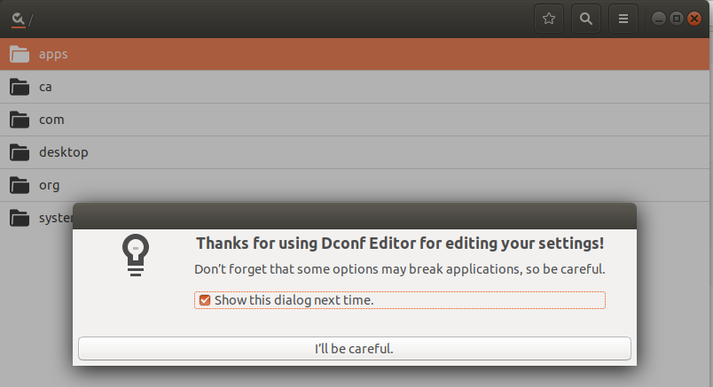

gsettings好比android中的property，是系统范围的可读、可写、可watch的键值对。
gsettings可以通过gio这个动态链接库访问、可以通过gsettings或dconf这个命令访问、可以通过dconf-editor这个图形界面工具访问。
➜ ~ gsettings
用法：
gsettings --version
gsettings [--schemadir 架构目录] 命令 [参数…]
命令：
help 显示此信息
list-schemas 列出安装了的架构
list-relocatable-schemas 列出可重定位的架构
list-keys 列出某个架构中的键
list-children 列出某个架构的子对象
list-recursively 递归地列出键和值
range 查询某个键的范围
describe 查询某个键的描述
get 获取某个键值
set 设置某个键值
reset 重设某个键值
reset-recursively 重设指定架构中的所有值
writable 检查某个键是否可写
monitor 监视更改
➜ ~ gsettings list-schemas
org.gnome.settings-daemon.plugins.color
org.gnome.crypto.pgp
....
org.gnome.settings-daemon.plugins.power
➜ ~ gsettings list-keys org.gnome.shell
app-picker-view
command-history
disable-user-extensions
always-show-log-out
disable-extension-version-validation
app-picker-layout
had-bluetooth-devices-setup
favorite-apps
enabled-extensions
disabled-extensions
development-tools
introspect
looking-glass-history
remember-mount-password
➜ ~ gsettings get org.gnome.shell favorite-apps
['firefox-esr.desktop', 'org.gnome.Nautilus.desktop', 'org.gnome.Software.desktop', 'funterm.desktop', 'chromium.desktop']
➜ ~ dconf
error: no command specified
Usage:
dconf COMMAND [ARGS...]
Commands:
help Show this information
read Read the value of a key
list List the contents of a dir
write Change the value of a key
reset Reset the value of a key or dir
compile Compile a binary database from keyfiles
update Update the system databases
watch Watch a path for changes
dump Dump an entire subpath to stdout
load Populate a subpath from stdin
➜ ~ dconf list /
ca/
desktop/
org/
➜ ~ dconf list /org/gnome/shell/
enabled-extensions
extensions/
favorite-apps
overrides/
➜ ~ dconf read /org/gnome/shell/enabled-extensions
['dash-to-panel@jderose9.github.com', 'wintile@nowsci.com', 'ibus-indicator@example.com', 'kimpanel@kde.org', 'ibus-tweaker@tuberry.github.com', 'appindicatorsupport@rgcjonas.gmail.com', 'panel-indicators@leavitals']
sudo apt install dconf-editor
dconf-editor

示例代码：
static void
test_basic (void)
{
gchar *str = NULL;
GSettings *settings;
settings = g_settings_new ("org.gtk.test");
g_object_get (settings, "schema", &str, NULL);
g_assert_cmpstr (str, ==, "org.gtk.test");
g_free (str);
g_settings_get (settings, "greeting", "s", &str);
g_assert_cmpstr (str, ==, "Hello, earthlings");
g_free (str);
g_settings_set (settings, "greeting", "s", "goodbye world");
g_settings_get (settings, "greeting", "s", &str);
g_assert_cmpstr (str, ==, "goodbye world");
g_free (str);
str = NULL;
if (!backend_set)
{
if (g_test_trap_fork (0, G_TEST_TRAP_SILENCE_STDERR))
{
settings = g_settings_new ("org.gtk.test");
g_settings_set (settings, "greeting", "i", 555);
abort ();
}
g_test_trap_assert_failed ();
g_test_trap_assert_stderr ("*g_settings_set_value*expects type*");
}
g_settings_get (settings, "greeting", "s", &str);
g_assert_cmpstr (str, ==, "goodbye world");
g_free (str);
str = NULL;
g_settings_reset (settings, "greeting");
str = g_settings_get_string (settings, "greeting");
g_assert_cmpstr (str, ==, "Hello, earthlings");
g_free (str);
g_settings_set (settings, "greeting", "s", "this is the end");
g_object_unref (settings);
}
by including <giomm/settings.h> and use class Settings
如果要开发一个launcher, 需要获取系统所有的应用程序列表。你可以手动去/usr/share/applications文件夹下搜.desktop文件，但gio提供了现成的接手，而且可能比你自己搜索更加全面。
static std::vector< Glib::RefPtr< AppInfo > > get_all () // Gets a list of all of the applications currently registered on this system.
tatic Glib::RefPtr< AppInfo > create_from_commandline (const std::string& commandline, const std::string& application_name, CreateFlags flags)
bool Gio::AppInfo::launch ( const Glib::RefPtr< Gio::File >& file )
Glib::RefPtr<Icon> Gio::AppInfo::get_icon ()
std::string Gio::AppInfo::get_executable () const
std::string Gio::AppInfo::get_display_name () const
GIO提供了一个Unix Domain socket的封装，可以用来发送普通消息和fd。
bool send_fd (int fd, const Glib::RefPtr< Cancellable >& cancellable)
// Passes a file descriptor to the receiving side of the connection.
int receive_fd ()
// A receive_fd() convenience overload.
Glib::RefPtr< InputStream > get_input_stream () //父类方法，用于发送接收普通数据
Glib::RefPtr< OutputStream > get_output_stream ()
//xdg base dirs
std::string Glib::get_current_dir ()
std::string Glib::get_user_config_dir ()
// environment variables
Glib::ustring Glib::get_host_name ()
std::string Glib::getenv (StdStringView variable)
bool Glib::setenv (StdStringView variable, StdStringView value, bool overwrite=true)
// path utils
std::string Glib::path_get_basename (StdStringView filename)
std::string Glib::path_get_dirname (StdStringView filename)
class Glib::DirIterator
class Glib::Dir
bool Glib::file_test (const std::string& filename, FileTest test)
int Glib::mkstemp (std::string& filename_template)
int Glib::file_open_tmp (std::string& name_used, const std::string& prefix)
std::string Glib::file_get_contents (const std::string& filename)